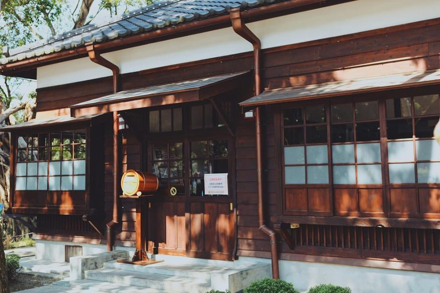
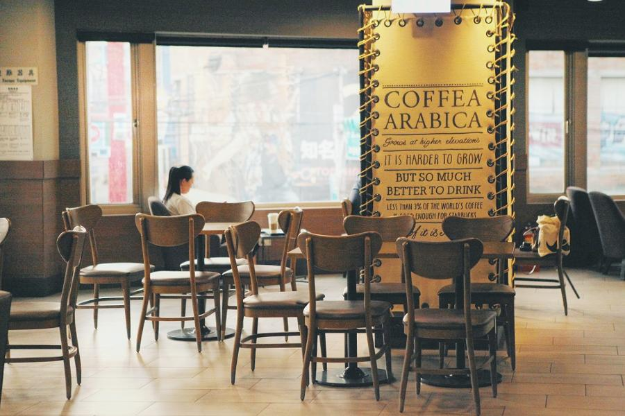
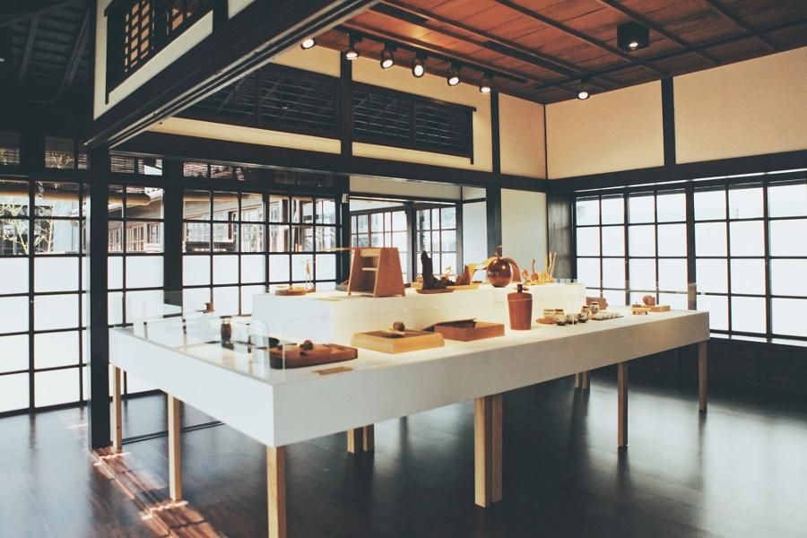

社區大使 走訪咖啡人文社區-大溪門市
照著標示，先去了《壹號館》，意外發現對面有Youbike站，立刻租一台。
如果是平日來，人潮較少，騎腳踏車真的很不錯。但如果在假日，可能比較適合散步。很多景點都在「普濟路」上，所以走起來也不累。
看見《壹號館》、《武德殿》、《四連棟》、《藝師館》、《工藝交流館》是保存良好的日式木造建築很驚喜。不管從外面看、還是在裡面拍，陽光灑落木頭真的很美。
去拜訪的時候，這些館剛好在舉辦《茶家具與小木器創作展》、《職人工藝傳說》、《漆器家計畫》等相關展覽，非常精彩。